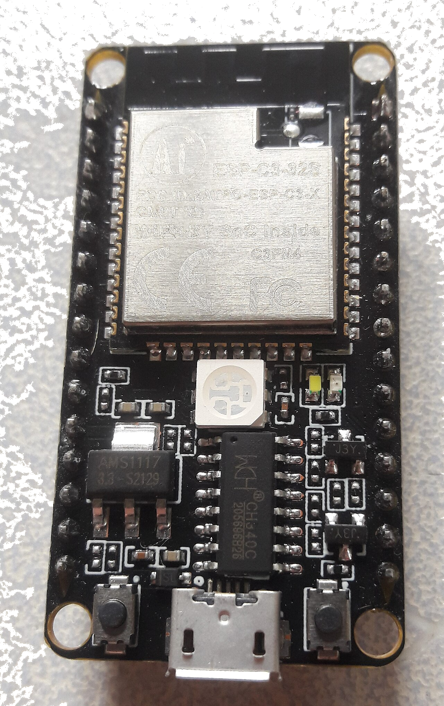
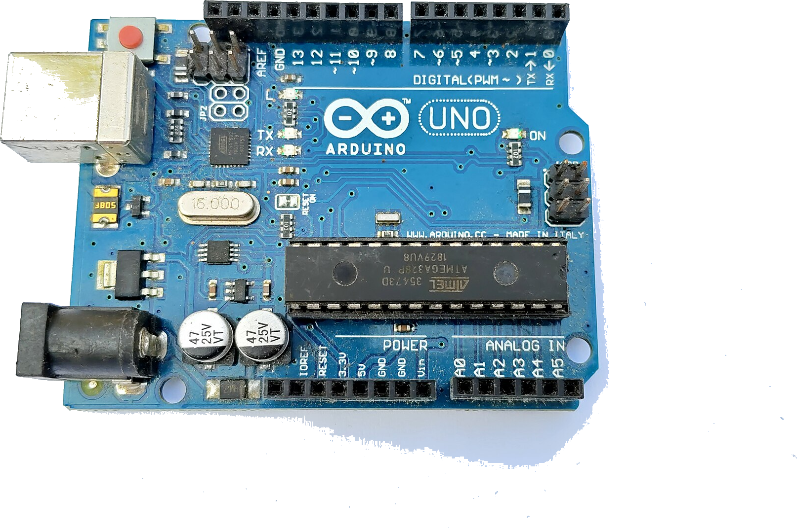
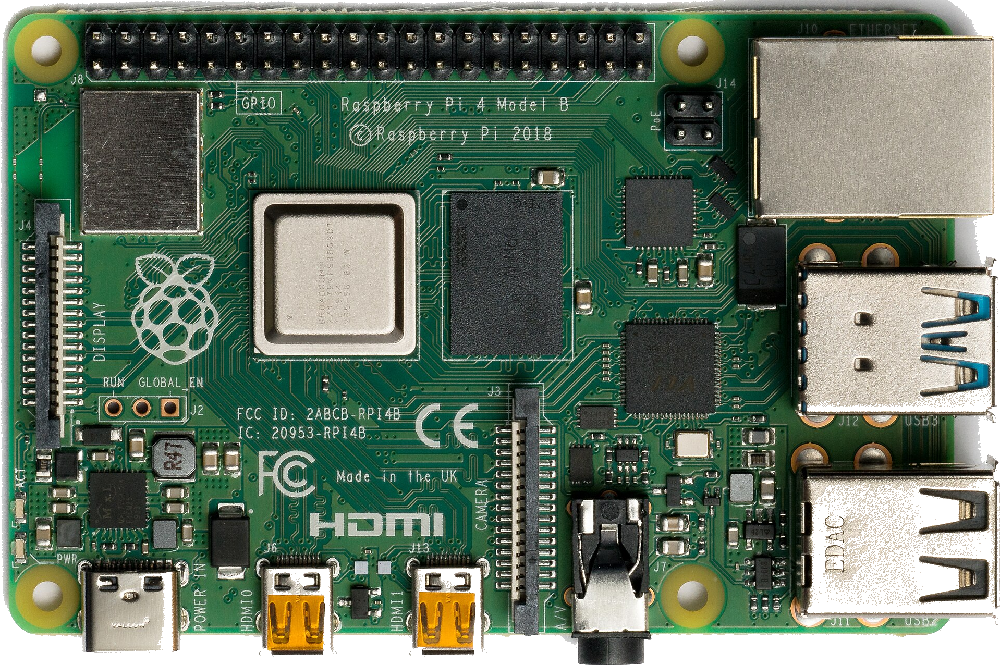
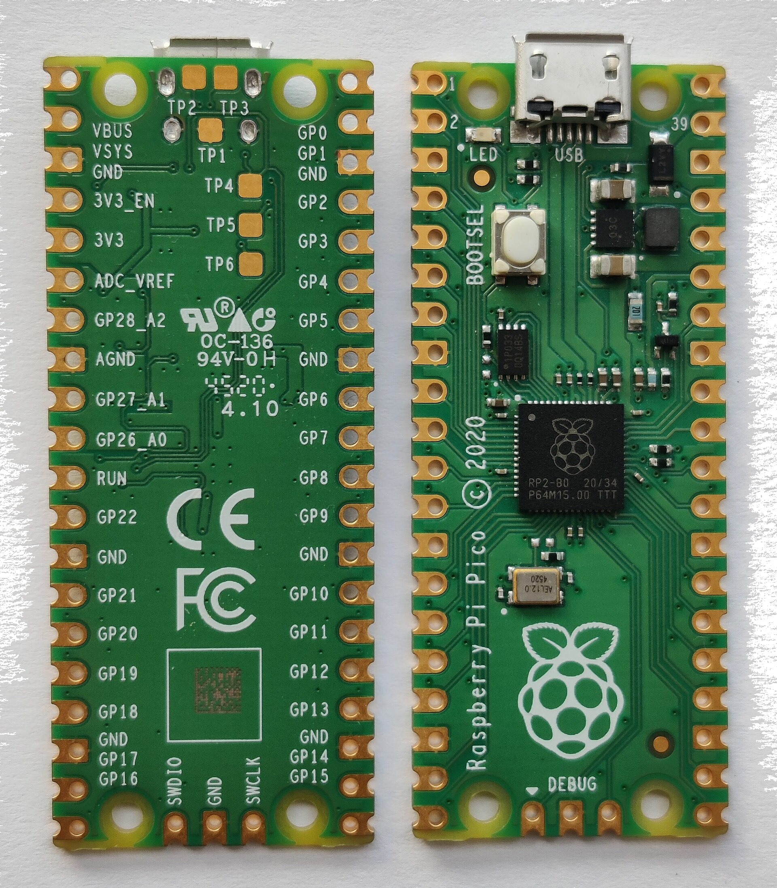
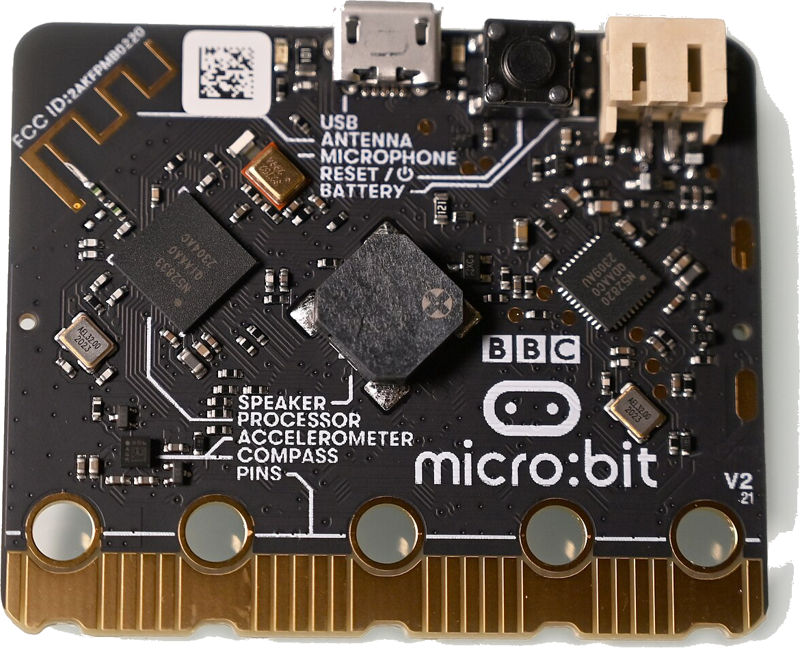
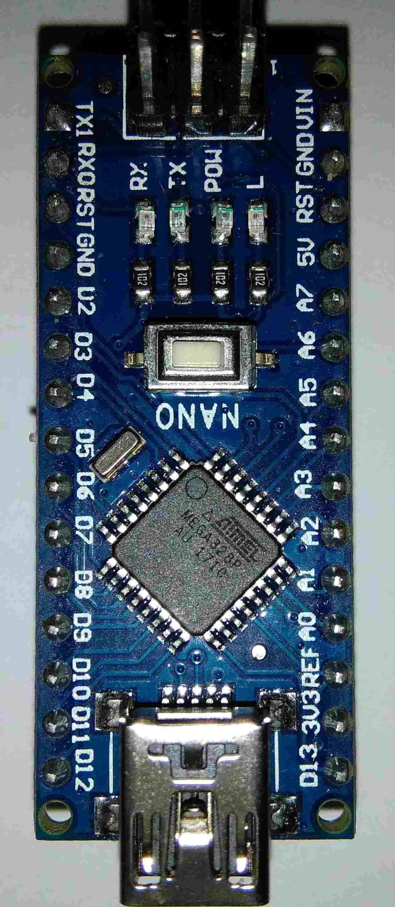
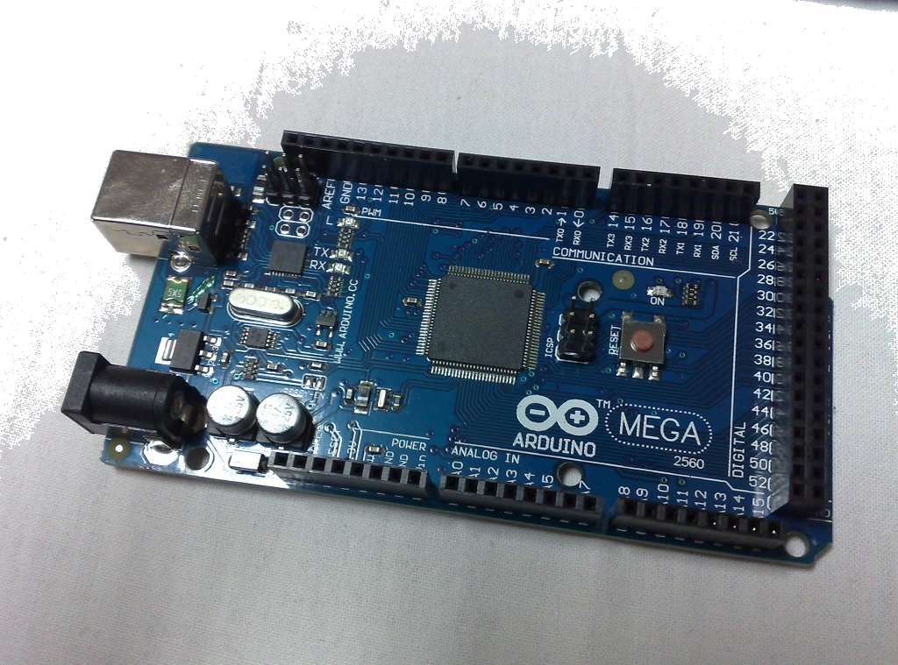
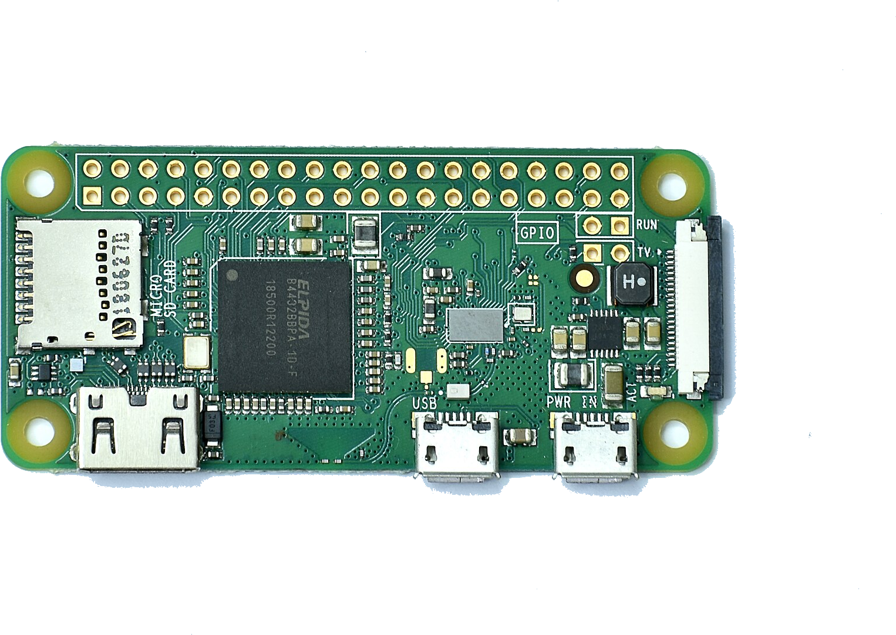
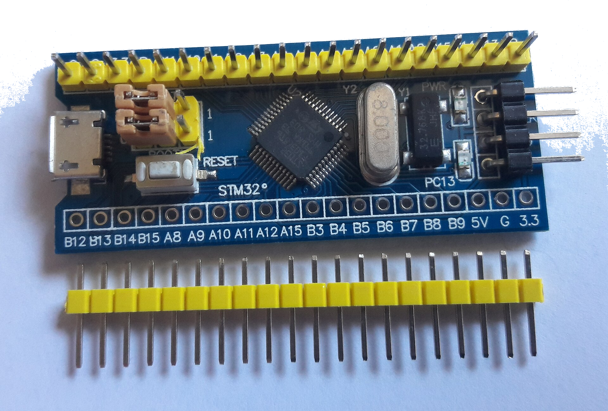

Every board is a story.
From loose parts to a finished circuit. Walk the bench.
Drag the page to cut.
01 / The parts
Resistors, diodes, buzzers. Every board starts loose in the bin. Open the register.
02 / The modules
Parts solder into jobs: a radio, a driver, a clock. Meet the modules.
03 / The boards
Nine boards on the bench. Point at one.

- Core
- RISC-V, 160 MHz
- SRAM
- 400 KB
- Radio
- Wi-Fi + BLE 5
- GPIO
- 22 pins
Good: Wi-Fi and BLE built in, for pocket change.
Mind: one core, fewer pins than the ESP32.

- Core
- ATmega328P, 16 MHz
- Flash
- 32 KB
- I/O
- 14 digital + 6 analog
- Logic
- 5 V
Good: the biggest ecosystem, easiest way in.
Mind: 8-bit, little memory, no radio.

- Core
- Quad A72, 1.5 GHz
- RAM
- up to 8 GB
- GPIO
- 40-pin header
- Power
- 5 V on a USB-C plug
Good: a real Linux computer, fastest here.
Mind: runs hot, costs more, not real-time.

- Core
- RP2040 dual, 133 MHz
- SRAM
- 264 KB
- GPIO
- 26 pins
- Logic
- 3.3 V
Good: cheap, fast, great MicroPython support.
Mind: no Wi-Fi on the base model.

- Core
- nRF52833, 64 MHz
- RAM
- 128 KB
- Radio
- BLE 5
- On board
- 5×5 LED + mic
Good: LEDs, mic and sensors already aboard.
Mind: meant for classrooms, limited power.

- Core
- ATmega328, 16 MHz
- Flash
- 32 KB
- I/O
- 22 pins
- USB
- mini-B
Good: breadboard-friendly, drops in anywhere.
Mind: old mini-B port, same small chip.

- Core
- ATmega2560, 16 MHz
- Flash
- 256 KB
- I/O
- 54 digital + 16 analog
- Logic
- 5 V
Good: fifty-four pins for big builds.
Mind: big and pricey, still 8-bit.

- Core
- Quad A53, 1 GHz
- RAM
- 512 MB
- Radio
- Wi-Fi + BT 4.2
- GPIO
- 40-pin header
Good: full Linux in a stick of gum.
Mind: half a gig of RAM, few ports.

- Core
- Cortex-M3, 72 MHz
- Flash
- 64 KB
- SRAM
- 20 KB
- Logic
- 3.3 V
Good: a 72 MHz ARM for next to nothing.
Mind: steeper toolchain, clone lottery.
04 / How a review runs
Four stages, one string.
1. On the mat
Gerbers in, flat on the grid.
2. Traces walked
Every net followed, clearance noted.
3. Joints checked
Pads, vias and pours under the lens.
4. Notes filed
What to fix, what to keep.
The mat you are on
A self-healing surface. It closes every cut you make.
A real mat forgets its scars.
- 10 mm Minor grid, true metric at screen pitch
- 50 mm Major grid, printed heavier
- live Ruler and coordinate readout, always on
- ≈3 s From open cut to closed surface
05 / Put a board on the mat.
Send the Gerbers or the board file, it renders here.
bench at circuit dot example
The bench sits in city to be confirmed. Notes come back in writing.